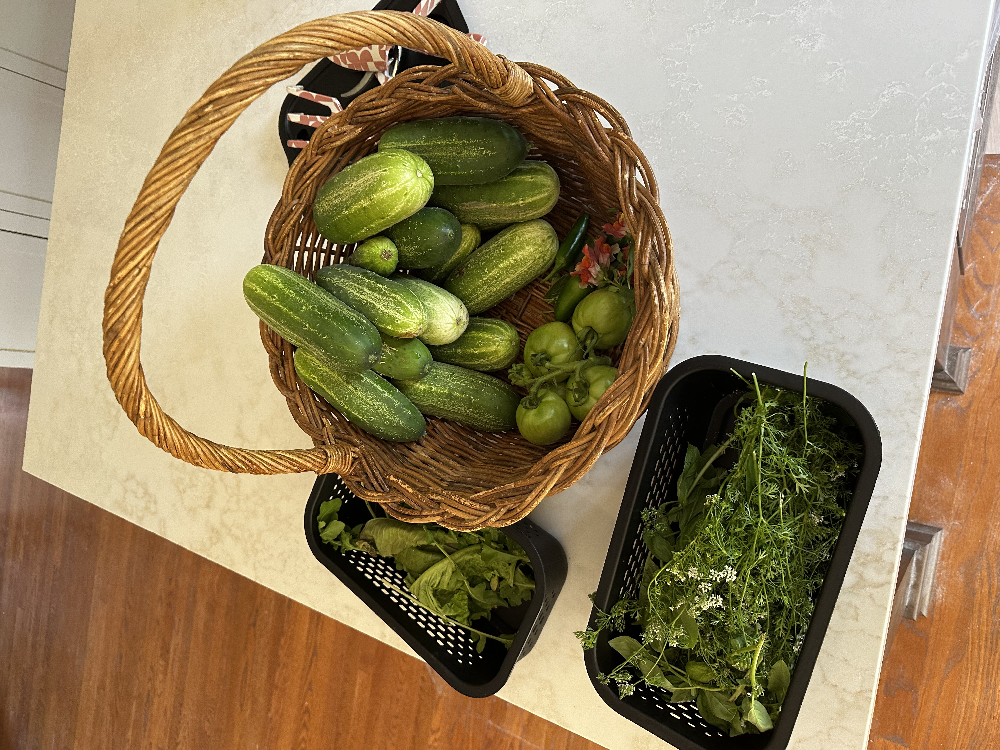
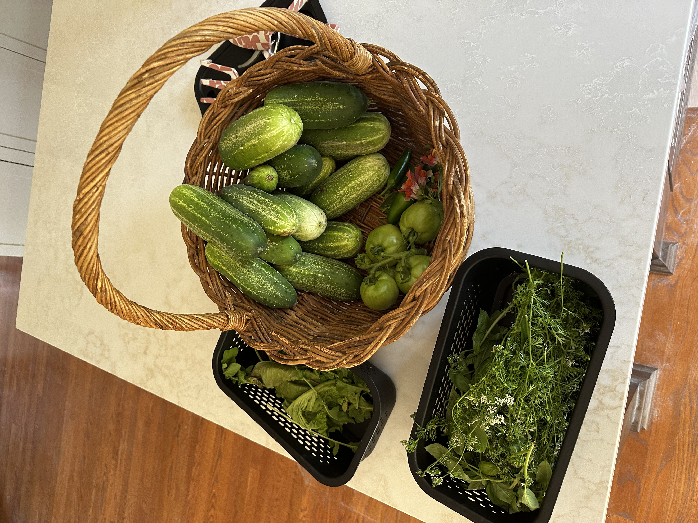

START YOUR GARDEN TODAY
Starting a garden at home is easier than you think! We’re here to help you discover what to plant—and when—based on your climate and location. Gardening isn’t just about the produce—it’s about connecting with nature, soaking up sunshine, and getting your hands dirty. No matter your skill level, you can grow something beautiful. Whether it’s flowers, veggies, or herbs, your garden is waiting to become your new favorite place.

 
